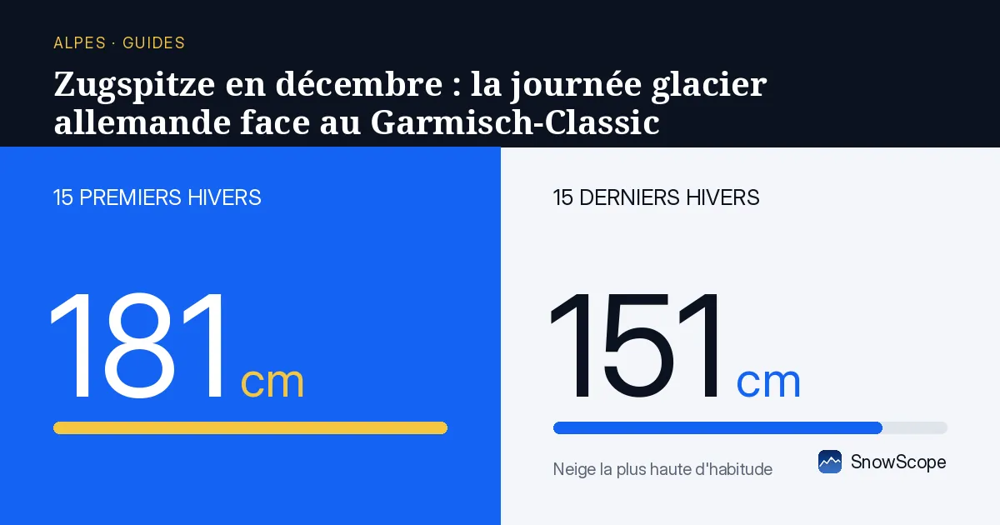

Zugspitze en décembre : la journée glacier allemande face au Garmisch-Classic
Mi-décembre, le plateau glaciaire de Zugspitze repose sous une neige profonde tandis que la zone inférieure de Garmisch-Classic montre une couche plus fine. Les deux secteurs coûtent environ 70 EUR pour un forfait journée en ligne, mais la profondeur de neige à chaque altitude raconte une histoire différente sur la valeur de votre argent.
Consultez les prévisions neige en temps réel pour Zugspitze sur l'application SnowScopeHauteurs de neige, alertes poudreuse et carte 3D, gratuitement.
Une ville, deux montagnes très différentes
Garmisch-Partenkirchen se situe au pied du plus haut sommet d'Allemagne. Le secteur du glacier de Zugspitze s'étend de la gare vallée à 995 m jusqu'à 2 627 m, avec 16 km de pistes balisées desservies par 38 remontées. Garmisch-Classic s'étend sur 38 km de pistes de 727 m à 2 047 m avec 18 remontées, toutes dans la même ville.
En décembre, le choix entre les deux est clair mais coûteux. Vous pouvez payer pour une neige profonde fiable sur un petit plateau glaciaire, ou plus de terrain mais un enneigement incertain en altitude inférieure.


Où la neige est certaine en décembre
Le sommet de Zugspitze à 2 627 m a reçu 30 cm ou plus chaque hiver durant la semaine du 15-21 décembre sur 46 hivers d'enregistrements. En semaine de Noël, 96 % des hivers ont apporté 60 cm ou plus. Même une année faible—du type qui arrive une fois tous les dix hivers—retient 62 cm là le 15 décembre. L'hiver dernier a laissé 80 cm.
Le sommet de Garmisch-Classic (2 047 m) a reçu 30 cm cette même semaine dans 89 % des hivers, mais son milieu (1 387 m) seulement dans 48 % des hivers. La base à 727 m enregistre seulement 6 cm typiques le 15 décembre. Pour skier en décembre, seul le sommet de Zugspitze et les remontées supérieures de Garmisch-Classic sont fiables.
Profondeur de neige par date en décembre
Au sommet du glacier de Zugspitze, comptez 81 cm le 1er décembre, 122 cm le 15 décembre, et 144 cm la veille de Noël. À mi-montagne (1 811 m), les chiffres sont 35, 52 et 67 cm. La gare vallée en moyenne seulement 7, 12 et 14 cm sur ces mêmes périodes—pas assez pour skier.
Le sommet de Garmisch-Classic passe de 46 cm (1er déc) à 57 cm (15 déc) à 71 cm (24 déc), tandis que son milieu va de 24 cm à 28 cm à 36 cm. Les deux secteurs voient des chutes de neige plus abondantes fin décembre, mais début décembre à Garmisch-Classic est mince sauf tout en haut.
Ce que les chiffres signifient pour une journée en décembre
Si vous avez du beau temps, le glacier de Zugspitze offre des conditions certaines : un large plateau doux où l'enneigement est profond et stable dès début décembre. Les pistes ne sont pas longues, mais la neige est fiable. Si une tempête ferme le plateau, vous n'avez pas de plan B sur cette montagne.
Garmisch-Classic offre plus de variété et plus de pistes, mais les skieurs de décembre doivent rester sur les remontées supérieures. L'enneigement mi-montagne est incertain ; la base est impraticable. Le compromis est le terrain contre un enneigement qui diminue.
Prix des forfaits et option abonnement saisonnier
Un forfait journée adulte pour Zugspitze coûte 70,50 EUR en ligne pour 2026-27, incluant le trajet en câble ou crémaillère. Garmisch-Classic coûte 69 EUR en ligne. Les pages officielles notent que les prix à la caisse sont plus élevés qu'en ligne. Aucune des deux stations n'affiche d'abonnement 6 jours sur la page de tarification principale.
La valeur en décembre réside dans le forfait journée acheté en ligne, pas l'abonnement semaine. Choisissez votre secteur selon la prévision, achetez en ligne, et gardez les deux montagnes à l'esprit comme plans de secours si l'une ferme ou la météo tourne.
Comment ce décembre se compare avec le passé
La neige du sommet de Zugspitze en décembre s'est stabilisée : la profondeur typique du 15 décembre était 112 cm dans les 15 premiers hivers d'enregistrements (1980-95) et 115 cm dans les 15 les plus récents (2011-26). L'hiver dernier était 80 cm, en dessous de la médiane récente mais toujours skiable fiablement.
Le milieu-montagne de Garmisch-Classic raconte une histoire moins encourageante. La profondeur décembrienne là-bas a baissé de 54 cm typiques dans les hivers antérieurs à 47 cm dans les récents. Cette tendance hivernale est douce, pas dramatique, mais elle compte pour une station qui dépend des réservations de décembre.
Conseils aux skieurs
- Achetez votre forfait journée en ligne avant d'arriver : c'est moins cher que le prix à la caisse.
- À Zugspitze, prenez les pistes du glacier et redescendez en câble ou crémaillère ; la neige de décembre à la base vallée est trop fine pour skier.
- À Garmisch-Classic mi-décembre, utilisez seulement les deux remontées supérieures sauf si de la neige fraîche arrive ; la mi-altitude a 30 cm d'enneigement dans moins de la moitié des décembres passés.
- Consultez le bulletin d'avalanche de Bavière (Lawinenwarndienst Bayern) avant tout ski hors-piste sur le glacier de Zugspitze.
- Si le plateau de Zugspitze est prévu de fermer (tempête ou froid extrême), les remontées supérieures de Garmisch-Classic deviennent votre option en décembre ; vérifiez la prévision la veille.
À propos de ces chiffres
Les hauteurs de neige des stations sont la neige la plus épaisse sur le haut du domaine à la date indiquée ; ce sont des estimations pour une zone, pas une mesure en un point. Les prévisions peuvent changer. Consultez toujours le bulletin d'avalanche officiel avant le hors-piste.
Bulletins d'avalanche officiels: Lawinenwarndienst Bayern
Citer ce bulletin
Pour la recherche, l'enseignement ou la presse : chiffres et graphiques réutilisables librement sous CC BY 4.0 avec cette citation.
SnowScope (2026), Zugspitze en décembre : la journée glacier allemande face au Garmisch-Classic, https://snowscope.app/blog/fr/2026/11/zugspitze-december-skiing-germany-glacier-price.html, consulté le 2026-11-14
SnowScope (Atlas Labs). (2026, November 14). Zugspitze en décembre : la journée glacier allemande face au Garmisch-Classic. SnowScope snow reports. https://snowscope.app/blog/fr/2026/11/zugspitze-december-skiing-germany-glacier-price.html
BibTeX
@misc{snowscope2026zugspitzedecemberskiingg,
author = {{SnowScope (Atlas Labs)}},
title = {Zugspitze en décembre : la journée glacier allemande face au Garmisch-Classic},
year = {2026},
month = nov,
howpublished = {\url{https://snowscope.app/blog/fr/2026/11/zugspitze-december-skiing-germany-glacier-price.html}},
note = {Published 2026-11-14 13:29 UTC; accessed 2026-11-14}
}· CC BY 4.0 · Méthodes, données et outils →
Zugspitze : neige et température selon l'altitude, cet hiver vs l'hiver dernier (outils) →
Suivre Zugspitze
Gratuit : un message quand la neige arrive, et la météo chaque matin.